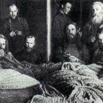

Prisoner: Lev Kopelev
“The prisoners were served a watery gruel, made of millet and smelling of motor oil, in used tin cans. I couldn’t get it down at first, and ate only the daily portions of bread and sugar. April 9, 1945, was my thirty-third birthday, and that morning our cell boss, the former White Russian Colonel Pyotr Berulya, presented me with a pound of sugar, made up of ten or eleven individual portions. It was a birthday present from my cell mates, and it gave me my first moment of happiness in prison. They, too, were hungry and afraid, yet they did what little they could to provide a bit of human warmth to one of their fellow prisoners.”
Religion in the Gulag
Religious believers went to great lengths to maintain their rituals inside the camps. Joseph Scholmer recalled Lithuanian Catholics holding mass 600 feet below the surface in an unused portion of a mine. "About twenty men had collected there…. All were standing there in silence: they were sunk in prayer. They felt quite safe here. No soldier who values his life would ever venture down into the pit…. [After the Mass] we departed as silently as we had come."
Even gender segregation—a significant hindrance to a Catholic woman who could only receive the sacraments from a male priest—could be creatively overcome. As the historian Reverend Christopher Lawrence Zugger has written, "In many camps, Catholic women would write down their sins on a piece of paper or tree bark with a number, which would be smuggled to the priests on the men’s side [of a Gulag labor camp]. The priests would go along the fence and silently dispense absolution to the women, who held up their fingers to identify themselves, and smuggle penances back to them."

Orthodox Priest at Solovki